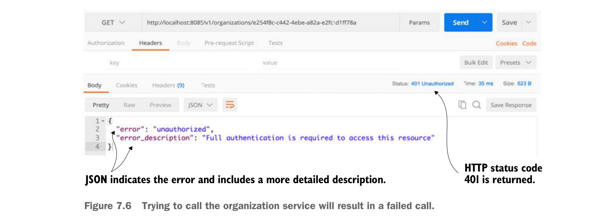
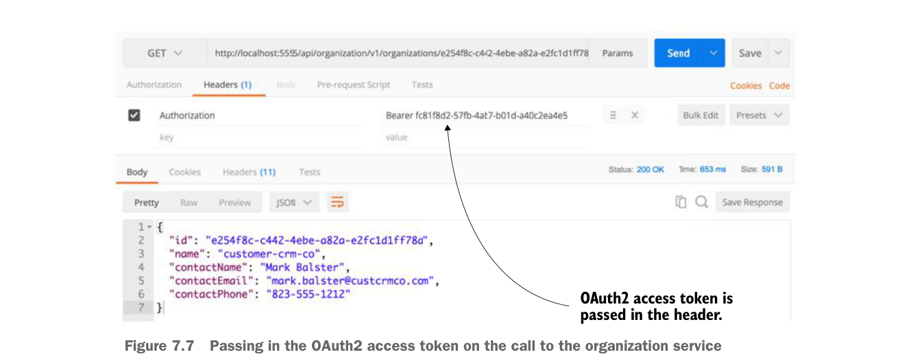

Nếu bạn truy cập organization service mà không có mã thông báo truy cập OAuth2 trong HTTP header, bạn sẽ nhận mã phản hồi HTTP 401 cùng với thông báo cho biết cần xác thực đầy đủ để truy cập dịch vụ.
Hình 7.6 cho thấy kết quả của một lời gọi tới organization service mà không có HTTP header OAuth2.

Cố gọi organization service sẽ dẫn đến một lời gọi thất bại.
Tiếp theo, bạn sẽ gọi organization service với mã thông báo truy cập OAuth2. Để lấy mã thông báo truy cập, xem mục 7.2.4, “Xác thực người dùng,” về cách tạo token OAuth2. Bạn cần cắt và dán giá trị của trường access_token từ lời gọi JavaScript trả về tới endpoint /auth/oauth/token và dùng nó trong lời gọi tới organization service. Hãy nhớ, khi gọi organization service, bạn cần thêm một HTTP header tên Authorization với giá trị Bearer access_token value.

Truyền mã thông báo truy cập OAuth2 trong lời gọi tới organization service